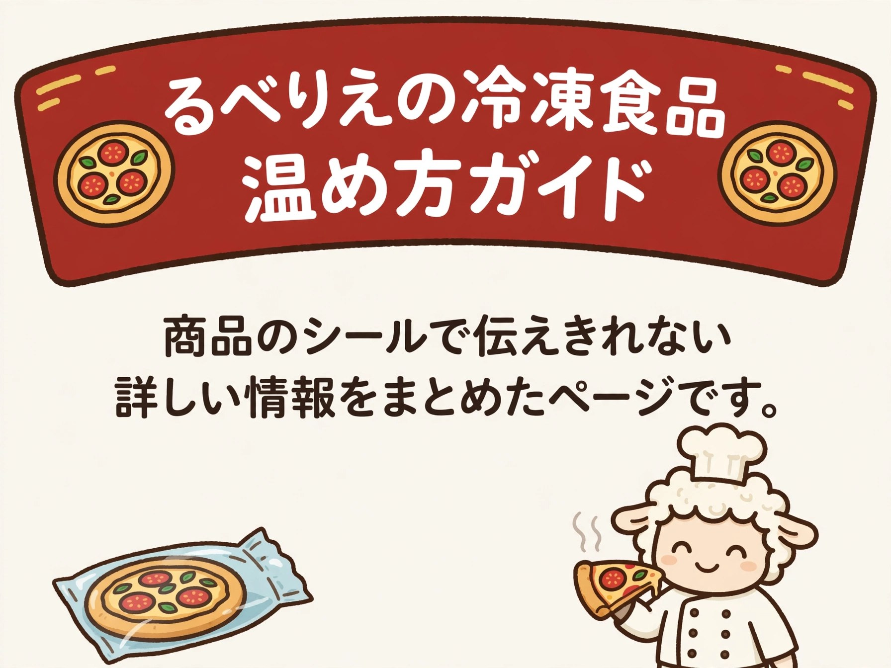
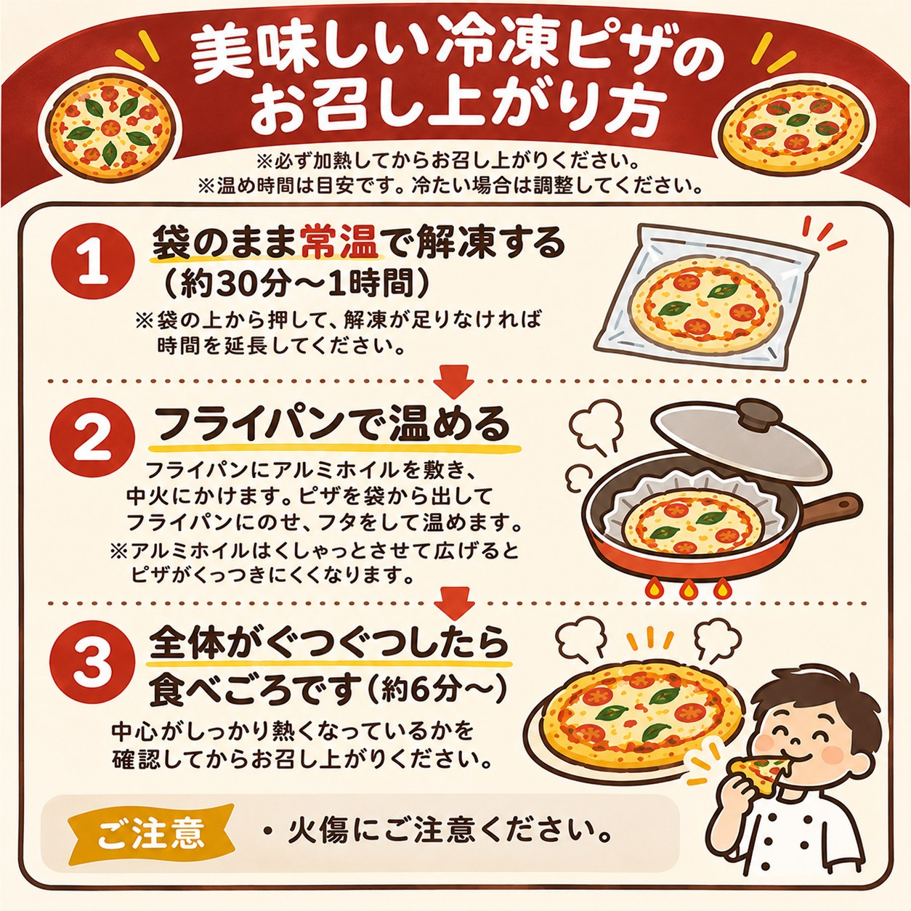
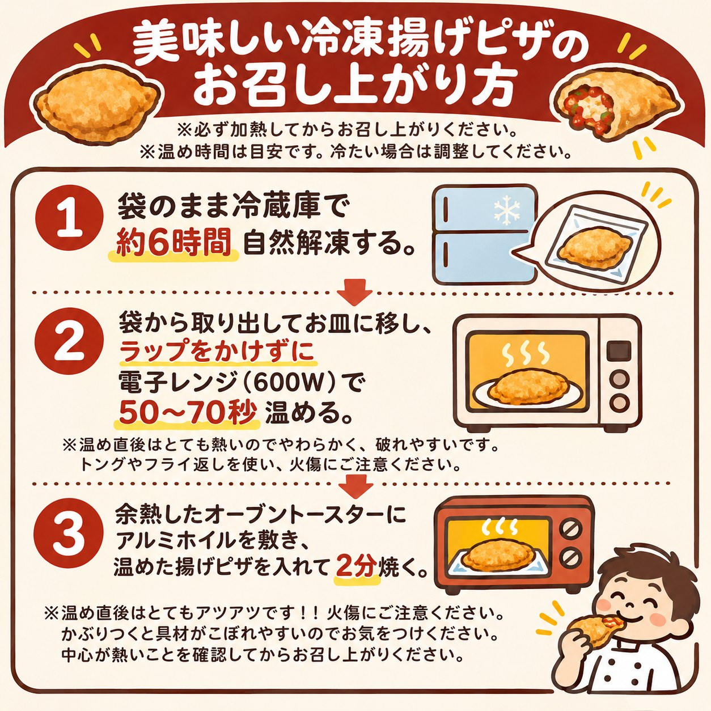
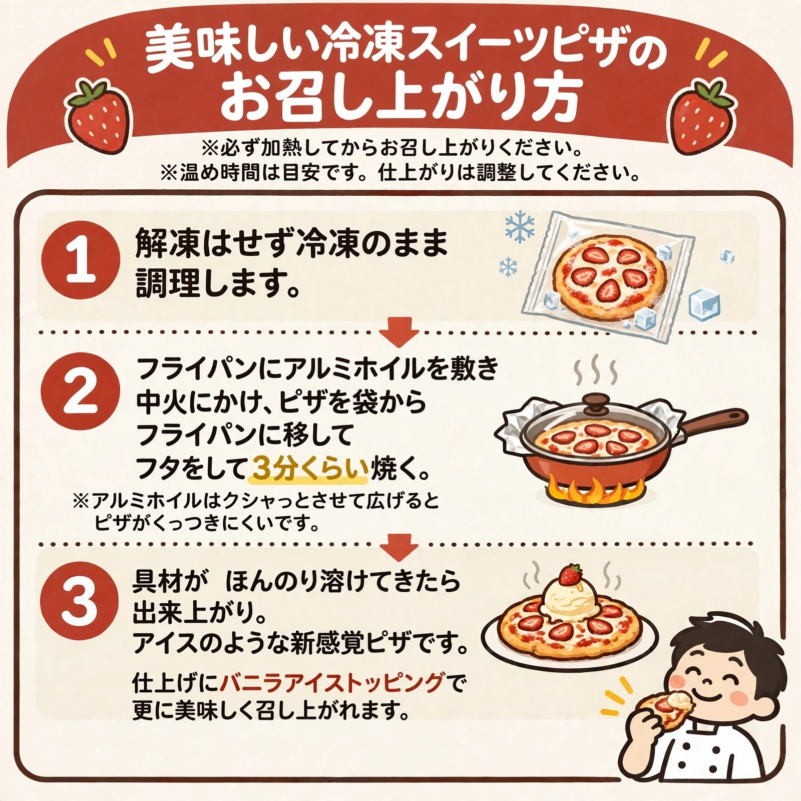
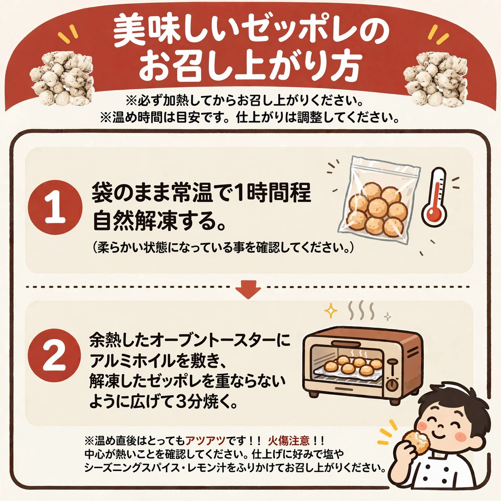
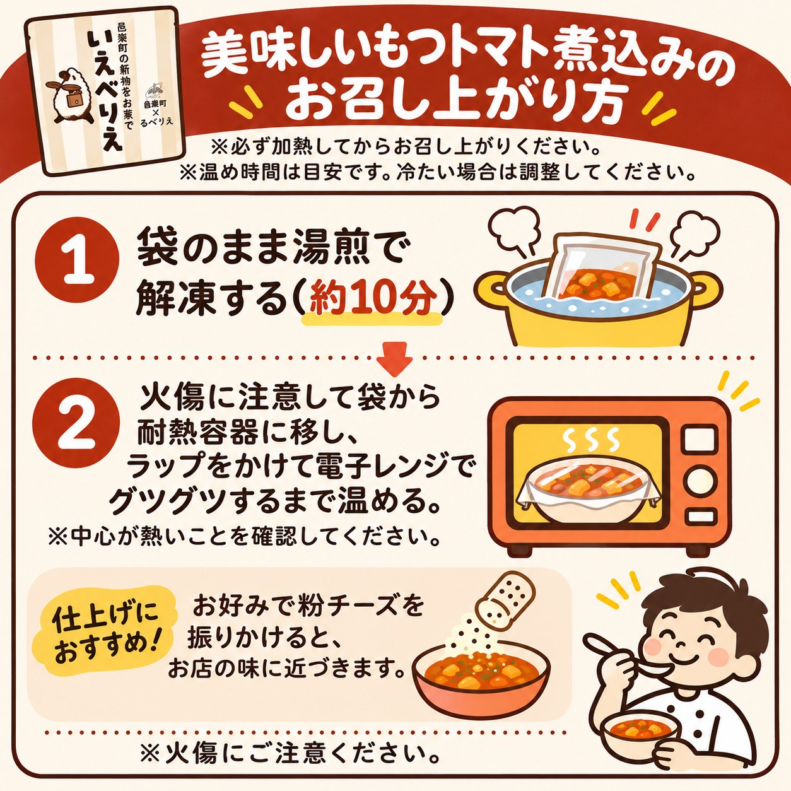
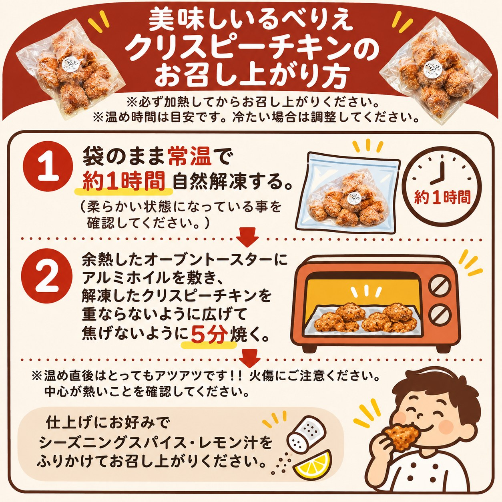

るべりえの冷凍食品 温め方ガイド

基本の手順は各商品の絵（インフォグラフィック）を
ご覧ください。その下に、家電ごとの代替方法や
コツなどの補足を置いています。
温め時間は目安です。冷たい場合は調整してください。
冷凍ホールピザ

補足フライパン以外の焼き方
| 焼き方 | やり方 |
|---|
| トースター | はじめに1000W以上で予熱する。解凍したピザを入れて約3〜4分焼く。 |
| オーブン | 庫内を220℃まで予熱する。解凍したピザを入れて4〜5分焼く。 |
| 魚焼きグリル | 予熱してから、ピザをアルミホイルに乗せて中火〜強火で約2〜3分焼く（焦げないよう火加減と時間を調整）。 |
| 電子レンジ（非推奨） | 皿に移して500〜600Wで60〜90秒。冷たい場合は30秒間隔で追加加熱。ふわっともちもちに仕上がるが、固くなりやすいので早めに召し上がる。 |
補足コツと注意
- 縁がもっちりした仕上げがお好みの方は、霧吹きやハケで縁を濡らしてから焼いてみてください（底面を濡らし過ぎると張り付きやすくなるので注意）。
- チーズが乗っていないピザは、具材が熱くなったら出来上がりです。
- 解凍をお急ぎの時は電子レンジの解凍機能でも解凍できますが、非推奨です。できれば自然解凍してください。
- 焼き方の参考動画：【冷凍ナポリピッツァ】自宅で美味しく温めよう！（ツジ・キカイ様の動画・使用許可済）
▲ 入口にもどる
冷凍揚げピザ

補足手順の詳しい数字
- 解凍：袋のまま冷蔵庫で6時間ほど自然解凍。ゆっくり解凍することが美味しく召し上がる秘訣です。
- 電子レンジ：ラップをかけずに600Wで50秒〜70秒。
- トースター仕上げ：予熱したトースターにアルミホイルを敷き、60〜90秒焼く。
補足代替と注意
- オーブントースターが無ければ、魚焼きグリルにアルミホイルを敷いて、焦げないように焼いてください。
- 温め直後はとても熱くてふわふわで破れやすいので、火傷に注意して、トングやフライ返しを使ってください。
- 余分な油が気になるようであれば、キッチンペーパーで拭き取ってください。
- かぶりつくと具材がこぼれやすいので、ナイフとフォークで召し上がるのもおすすめです。
補足種類別のひとこと
- 大きめ・具材多めの揚げピザは、電子レンジの温め時間を+30秒多めに。
- チョコレート系は温め過ぎるとチョコが溢れ出すので、様子を見ながら温めてください。
- スイーツ系は、お好みでバニラアイスのトッピングがおすすめです。
- スイーツ揚げピザの温め方も、この揚げピザの方法と同じです。
▲ 入口にもどる
冷凍スイーツピザ

補足熱々で食べたい方へ
- 熱々が良い方の温め方は、ホールピザの温め方と同じです。
- ただし、フルーツの乗ったピザは特に水分が出てマスカルポーネが分離しやすいので、注意してください。
- 蓋付きフライパンがない方は、ホールピザの温め方を参考に、調理時間を短くして仕上げてください。
補足仕上げのアレンジ
- 仕上がりにバニラアイスをトッピングすると、さらに美味しく召し上がれます。アイスのような新感覚スイーツピザとして、ぜひお試しください。
▲ 入口にもどる
冷凍ゼッポレ

補足代替の温め方
- オーブントースターがない方は、魚焼きグリルやオーブンで、焦げないように温めてください。
- 電子レンジ加熱は水分が飛んで固くなりやすいので、非推奨です。
補足食べ方のアレンジ
- 生地に塩気はありますが、お好みで塩・シーズニングスパイス・レモン汁等を振りかけてお召し上がりください。
- シチューやもつトマト煮込みのソースをつけて食べても美味しいですよ。
▲ 入口にもどる
冷凍もつトマト煮込み

補足解凍のコツ
- 湯煎での解凍は、中身が溶ければOKです。約10分は目安の時間です。
- 冷凍のまま電子レンジで解凍するのは非推奨です。できれば湯煎で解凍してください。
補足加熱の目安
- 電子レンジでの加熱は、時間ではなく全体がグツグツしてきたらOKです（インフォグラフィック通り）。ラップをかけて温め、中心が熱いことを確認してください。
補足相性のいい組み合わせ
- 仕上げの粉チーズでお店の味に近づきます（インフォグラフィック参照）。
- 残ったソースはゼッポレをつけて食べるのもおすすめです。
▲ 入口にもどる
冷凍クリスピーチキン

補足代替の温め方
- オーブントースターのない方は、魚焼きグリルの弱火で、焦げないようにゆっくり温めてください。
- 解凍をお急ぎの場合には電子レンジの解凍機能を使用してください（非推奨）。できるだけ自然解凍してください。
補足食べる前の確認
- 温め直後はとってもアツアツです。火傷に注意して、中心が熱いことを確認してからお召し上がりください。
▲ 入口にもどる